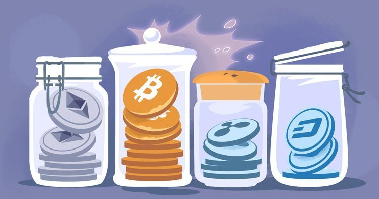
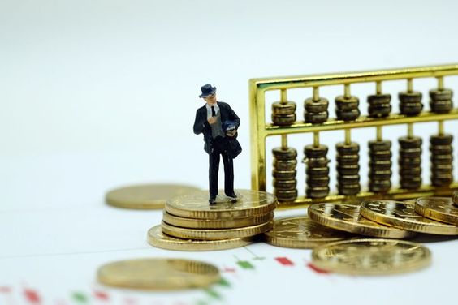

Перед каждым, кто покупает или добывает криптовалюты в первый раз, а порой и перед теми, кто использует их уже давно, встает вопрос: где надежно хранить полученные монеты?
Различают два способа хранения криптовалют: горячий и холодный.
Горячий называется так из-за того, что монеты в нем всегда доступны онлайн, и вы можете потратить их в любой момент. Такие кошельки требуют доступ к интернету, поскольку они поддерживают активное соединение с блокчейном.
Холодный, напротив, предназначен для автономного хранения без подключения к сети. Для этого можно использовать личный компьютер, телефон, флеш-карту или даже обычный лист бумаги, но наиболее безопасными считаются аппаратные кошельки. Подробнее о каждом из них поговорим далее.
Кроме того, кошельки делятся на обычные и мультивалютные. Последние позволяют хранить несколько различных криптовалют в одном месте.
Правильный выбор горячего и холодного кошелька — важный и ответственный шаг. Вы должны понимать, что от вашего выбора зависит сохранность ваших криптовалютных активов. Наиболее надежным методом хранения, традиционно считается холодный, В этом случае монеты хранятся на вашем личном устройстве и не доступны никому, кроме вас. Тем не менее, свои преимущества и недостатки имеет каждый из вышеописанных методов.
Горячие
Суть горячих методов хранения состоит в том, что приватные ключи вашего кошелька помещаются на сервера используемого сервиса, после чего вы в любой момент можете получить доступ к кошельку, порой зная лишь логин и пароль. Используя такие методы, рекомендуется подключать дополнительные меры защиты, предоставляемые сервисом, например, двухэтапную аутентификацию (подтверждения входов и операций посредством SMS или кода в специальном приложении).
Контролируемые
Эти кошельки имеют прямой доступ к вашим приватным ключам, но при этом более удобны в использовании.
Blockchain.info
Лидер рынка. Является самым известным онлайн-сервисом. Проверен временем, прост в использовании и имеет клиенты для большинства платформ.
Поддерживаемые криптовалюты: Bitcoin и Ethereum.
Платформы: Web, iOS, Android.
Неконтролируемые
Эти кошельки позволяют хранить приватный ключ на вашем устройстве, но при этом они имеют подключение к интернету, поэтому их также нельзя назвать полностью безопасными.
Bread
Один из лидеров на рынке среди пользователей iOS.
Криптовалюты: Bitcoin.
Платформы: iOS, Android.v
Exodus
Простой в использовании и удобный мультивалютный кошелек с приятным интерфейсом. Один из лучших вариантов для тех, кто предпочитает хранить криптовалюты на личном компьютере. Интеграция с сервисом ShapeShift позволяет удобно обменивать криптовалюты прямо в приложении.
Криптовалюты: Bitcoin, Litecoin, Ethereum, Dash, Golem, Augur, Decred, EOS, Aragon, Gnosis, OmiseGo, Civic, Bitcoin Cash, Ethereum Classic.
Платформы: Windows, MacOS, Linux.
Monee
Удобный кошелёк для хранения эфира и участия в ICO. Также имеет контролируемую версию, в которой приватный ключ хранится на серверах бота для большего удобства — Monee.
Криптовалюты: Ethereum.
Платформы: Web, Telegram.
Copay
Имеет более популярный аналог для холодного хранения — BitPay.
Криптовалюты: Bitcoin.
Платформы: iOS, Android, Windows, MacOS, Linux.
Jaxx
Достаточно популярный мультивалютный и мультиплатформенный кошелек.
Криптовалюты: Bitcoin, Litecoin, Ethereum, Ethereum Classic, Zcash, Dogecoin, Golem, Augur, REP, Gnosis, Rootstock, Testnet, Iconomi, DigixDAO.
Платформы: iOS, Android, MacOS, Windows, Linux.
Холодные
В данном случае приватные ключи кошелька сохраняются на вашем личном устройстве и недоступны извне. К кошелькам с холодным методом хранения можно отнести аппаратные и бумажные кошельки.
Аппаратный кошелек
Специальное устройство, предназначенное для хранения криптовалют. Зачастую аппаратные кошельки обладают защитой от вирусов, взлома и внешних воздействий. Аналогом такого кошелька является USB-кошелек, способ создания которого описан в этой статье, но его степень защищенности гораздо ниже.
Trezor
Считается лучшим из аппаратных кошельков, имеет удобный интерфейс и сравнительно небольшие размеры.
Криптовалюты: Bitcoin, Litecoin, DASH, Zcash, Bitcoin Cash, Ethereum, Ethereum Classic и ERC20.
Цена с доставкой: €98 (~ ₽6,700).
KeepKey
Криптовалюты: Bitcoin, Litecoin, Dogecoin, Dash, Namecoin.
Цена: $129 (~ ₽7,700).
Ledger Nano S
Криптовалюты: Bitcoin, Ethereum, Litecoin, Dash, Zcash, Dogecoin, Bitcoin Cash, Ethereum Classic, Ripple, Vertcoin и ERC20.
Цена: €82 (~ ₽5,600).
Бумажный кошелёк
Способ генерации биткоин-адреса и секретного ключа в режиме оффлайн. В этом случае вы самостоятельно выбираете носитель, на который можно записать приватный и публичные ключи вашего кошелька. Плюсом такого способа является то, что ключи не хранятся в цифровом виде, поэтому нет причин бояться хакерских атак или поломки оборудования.
Для создания кошелька такого типа, можно перейти на сайт walletgenerator.net, скачать архив и сгенерировать адрес, следуя инструкциям. Делать это рекомендуется предварительно отключив доступ к интернету, чтобы избежать кражи приватного ключа.
Публичный ключ (адрес) используется для получения криптовалюты. Приватный ключ позволяет вам отправлять криптовалюту.
Ключи обычно печатаются в виде QR-кодов, которые при сканировании открывают доступ ко всем вашим транзакциям. Отдельное внимание стоит уделить сохранности такого кошелька. Если ключами или даже их фотографией завладеет посторонний — вы рискуете потерять все средства.
